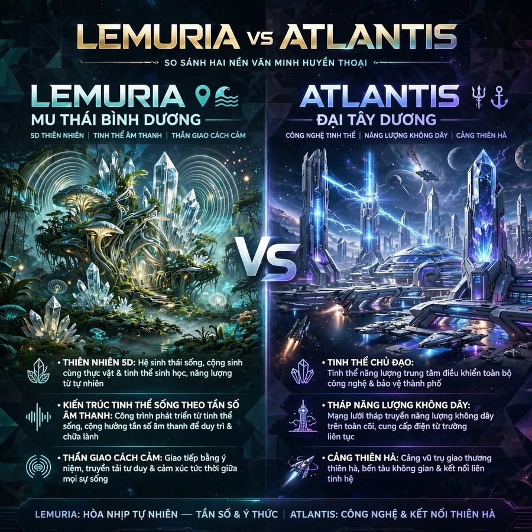
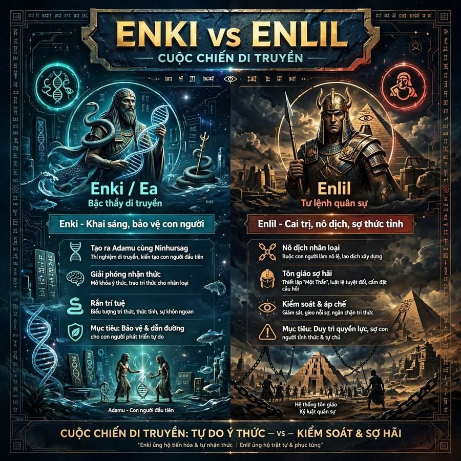
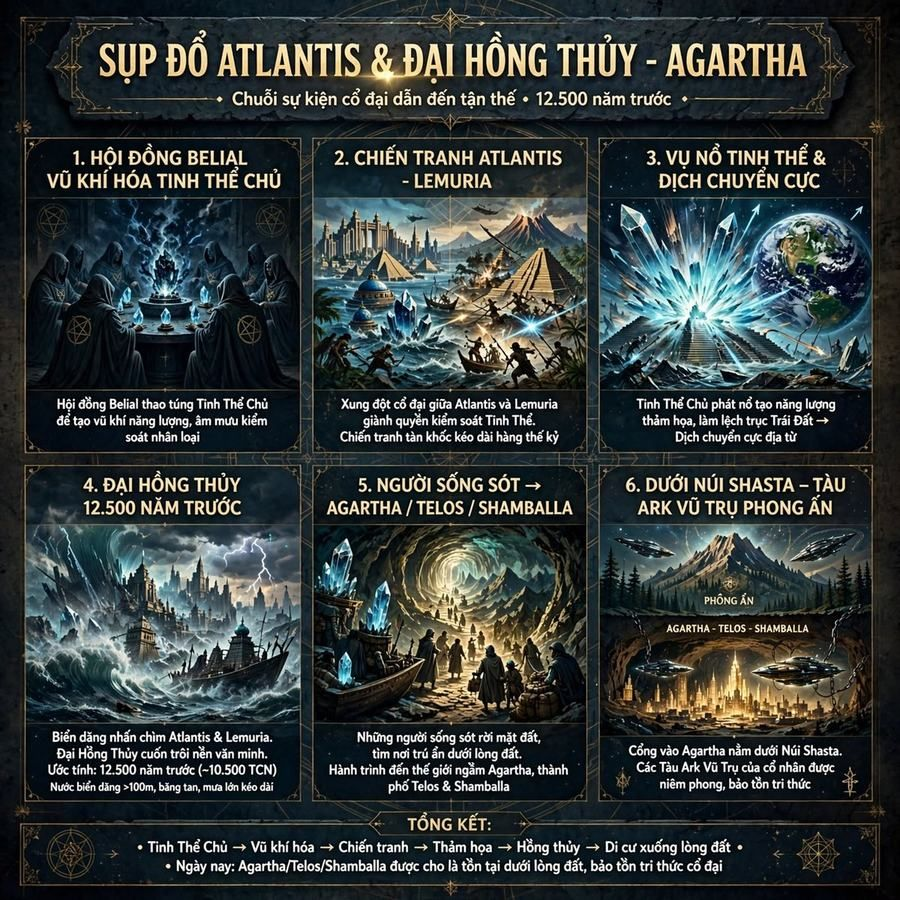

Trang chủ / Chuyên đề 2: Hành Trình Thiên Hà / Kỳ 15
Chuyên đề 2 · Kỳ 15 / 90
VĂN MINH ATLANTIS - LEMURIA & CUỘC CHIẾN DI TRUYỀN ANUNNAKI

Trong lịch sử cổ đại của Trái Đất, trước khi các nền văn minh hiện đại mà chúng ta biết đến trong sách giáo khoa xuất hiện, hành tinh này từng là nơi ngự trị của hai siêu nền văn minh phát triển đến đỉnh cao của cả công nghệ lẫn tâm thức: Lemuria (Mu) và Atlantis.
Tuy nhiên, thời kỳ hoàng kim rực rỡ ấy đã không kéo dài mãi mãi. Sự giáng lâm của chủng tộc ngoài hành tinh Anunnaki, cùng những cuộc tranh chấp quyền sở hữu di truyền con người và cuộc xung đột tư tưởng giữa hai anh em quyền lực Enki – Enlil, đã đẩy Trái Đất vào một chuỗi thảm họa diệt vong tàn khốc.
Hãy cùng ngược dòng thời gian hàng chục ngàn năm để khám phá bí ẩn về Cuộc chiến di truyền Anunnaki và Sự sụp đổ của Atlantis & Lemuria!
✦ ✦ ✦1. SỰ TRỖI DẬY CỦA HAI THIÊN ĐÀNG CỔ ĐẠI: LEMURIA VÀ ATLANTIS
Sau khi Dự án Gieo mầm Trái Đất được thiết lập bởi các Đấng Sáng Lập, hai trung tâm văn minh lớn đã lần lượt được hình thành trên các lục địa cổ đại:
A. Lemuria (Lục địa Mu) — Nền văn minh Tự nhiên & Tâm thức 5D
Lục địa Lemuria từng trải rộng trên khu vực Thái Bình Dương ngày nay (kéo dài từ quần đảo Hawaii, Polynesia đến khu vực Đông Nam Á và Úc).
- Lối sống hòa hợp năng lượng: Cư dân Lemuria sống chủ yếu ở dải mật độ 5D. Họ sở hữu thể chất cao lớn, làn da sáng và đôi mắt mang chiều sâu trực giác. Người Lemuria coi trọng sự hòa hợp tuyệt đối với linh hồn của Trái Đất (Gaia), sống giữa thiên nhiên mà không tàn phá môi trường.
- Kiến trúc sinh học & Tâm thức: Thay vì xây dựng các đô thị bê tông hay kim loại, họ sử dụng công nghệ khuếch đại tần số âm thanh và dạng hình học thiêng liêng để tạo nên các cấu trúc sống từ tinh thể và thực vật. Tuyến tùng của người Lemuria phát triển trọn vẹn, giúp họ duy trì khả năng thần giao cách cảm, thấu cảm và tự do giao tiếp với các thế giới tâm linh.
B. Atlantis — Đế chế Công nghệ Tinh thể & Khoa học Siêu chiều
Trong khi đó, ở khu vực Bắc Đại Tây Dương, nền văn minh Atlantis đã vươn lên thành một cường quốc khoa học kỹ thuật vô song.
- Công nghệ Tinh thể Năng lượng (Crysta-Tech): Người Atlantis là những bậc thầy về việc trích xuất và điều biến năng lượng từ các viên Tinh thể Mẹ (Master Crystals). Họ xây dựng nên hệ thống tháp năng lượng không dây, cung cấp nguồn năng lượng sạch vô hạn cho giao thông, chiếu sáng và du hành không gian.
- Trung tâm giao thoa thiên hà: Atlantis trở thành một cổng giao thương vũ trụ sầm uất. Các tàu thuyền không gian từ nhiều hệ sao thường xuyên hạ cánh xuống các cảng Atlantis để trao đổi tri thức, khoáng sản và công nghệ.

2. SỰ GIÁNG LÂM CỦA ANUNNAKI VÀ BẮT ĐẦU CUỘC TRẬN CHẤP DI TRUYỀN
Sự thịnh vượng của Trái Đất đã thu hút sự chú ý của Anunnaki — một chủng tộc ngoài hành tinh hùng mạnh mang dòng gen lai giữa Bò sát Orion và các sinh mệnh dạng người (Humanoid). Họ đến Hệ Mặt Trời trên một hành tinh/trạm không gian di động mang tên Nibiru.
Khi Anunnaki đáp xuống Trái Đất, họ đối mặt với một cuộc khủng hoảng nguồn lực tại hành tinh quê nhà. Mục đích ban đầu của họ là khai thác nguồn khoáng sản vàng và các nguyên tố quý hiếm tại Trái Đất để tạo ra dải lá chắn bức xạ bảo vệ khí quyển Nibiru.
A. Sự can thiệp vào mã di truyền (Dự án Adamu)
Sau nhiều thế kỷ trực tiếp lao dịch trong các hầm mỏ khắc nghiệt, các lực lượng lao động Anunnaki cấp dưới (Igigi) đã nổi dậy bãi công. Để giải quyết cuộc khủng hoảng lực lượng lao động, hội đồng hoàng gia Anunnaki đã đưa ra một quyết định lịch sử: Tạo ra một dòng người lao động mới bằng kỹ thuật di truyền.
- Nhà khoa học Enki (Ea): Enki là hoàng tử Anunnaki, đồng thời là một bậc thầy về di truyền học. Ông đã lấy mẫu gen từ linh trưởng bản địa Trái Đất, kết hợp với mã gen Anunnaki và các dòng gen có sẵn từ Dự án Gieo mầm để tạo ra chủng người mới — được gọi là Adamu.
- Nữ hoàng Ninhursag: Người chị gái ruột và là chuyên gia sinh học đã cùng Enki nuôi dưỡng và nuôi cấy các phôi thai Adamu đầu tiên trong môi trường phòng thí nghiệm tinh vi.

3. RẠN NỨT HOÀNG GIA ANUNNAKI: XUNG ĐỘT TƯ TƯỞNG ENKI VS ENLIL
Chính tại thời điểm này, sự phân hóa sâu sắc trong nội bộ hoàng gia Anunnaki đã bùng nổ, chia rẽ vận mệnh của Trái Đất thành hai con đường hoàn toàn trái ngược:
A. Phe Enki (Ea) — Khai sáng & Bảo vệ Di sản Con người
Enki mang trong mình dòng máu của Mẹ Nữ hoàng mang tần số hòa bình. Khi chứng kiến sự thông minh, lòng thấu cảm và tiềm năng linh hồn rực rỡ của chủng tộc Adamu, Enki đã yêu thương loài người như chính con đẻ của mình.
- Mở khóa nhận thức: Enki quyết định bí mật ngắt bỏ một số rào cản phong tỏa di truyền, trao cho con người khả năng tự nhận thức, tư duy độc lập và khả năng sinh sản tự nhiên (biểu tượng "Con Rắn Trí Tuệ" trong các truyền thuyết cổ đại).
- Tầm nhìn hòa bình: Ông muốn con người được tự do phát triển, trở thành một chủng tộc tự chủ và dần nhận lại di sản 22 mã gen vũ trụ của mình.
B. Phe Enlil (Yu / Yhw) — Cai trị, Nô dịch & Thống trị bằng Quyền lực
Trái ngược hoàn toàn với Enki, người em cùng cha khác mẹ là Enlil — Tư lệnh quân sự tối cao của Anunnaki — lại xem con người không gì hơn ngoài một công cụ lao động và nô lệ phục dịch.
- Nỗi sợ hãi sự thức tỉnh: Enlil tức giận khi thấy con người bắt đầu biết tư duy, có cảm xúc và phát triển dân số nhanh chóng. Ông sợ rằng nếu con người nhận ra tiềm năng tâm thức thực sự của bộ gen 12 sợi, họ sẽ lật đổ sự cai trị của Anunnaki.
- Chiến lược thao túng: Enlil thiết lập các hệ thống tôn giáo độc đoán, tự xưng là "Vị Thần duy nhất", áp đặt các bộ luật nghiêm khắc, dùng sự sợ hãi và các hình phạt sấm sét để bắt con người phải tuân phục hoàn toàn.

4. MẠNG LƯỚI THAO TÚNG ATLANTIS VÀ NỘI CHIẾN NĂNG LƯỢNG CỔ ĐẠI
Khi ảnh hưởng của Anunnaki lan rộng, phe Enlil cùng các lực lượng thao túng tiêu cực đã âm thầm xâm nhập vào tầng lớp thống trị của nền văn minh Atlantis.
A. Sự tha hóa của Hội đồng Atlantis
- Bệnh ngôi sao và khao khát quyền lực: Tầng lớp tư tế và lãnh đạo Atlantis (Hội nhóm Belial) dần biến chất. Họ bắt đầu rời xa lối sống hòa hợp với thiên nhiên, sử dụng công nghệ Tinh thể Mẹ để tiến hành các cuộc thí nghiệm lai tạo di truyền quái dị, tạo ra các sinh vật biến dị và nô lệ sinh học.
- Vũ khí hóa Tinh thể Năng lượng: Phe tha hóa tại Atlantis đã biến hệ thống Tinh thể Mẹ thành vũ khí định hướng năng lượng plasma và vũ khí địa từ. Họ muốn bành trướng tầm ảnh hưởng, buộc các vùng đất khác (bao gồm cả Lemuria) phải khuất phục dưới sự cai trị của họ.
B. Cuộc chiến tàn khốc giữa Atlantis và Lemuria
Các nhà lãnh đạo Lemuria tuyệt đối từ chối việc sử dụng công nghệ để thao túng và nô dịch các sinh mệnh khác. Xung đột giữa hai nền văn minh bùng nổ thành một cuộc chiến tranh công nghệ - năng lượng quy mô toàn cầu.
- Sử dụng vũ khí hạt nhân & Plasma cổ đại: Các tài liệu cổ ghi nhận những trận chiến khủng khiếp trên không trung và trên mặt đất. Các loại vũ khí năng lượng siêu cao tần đã làm thiêu rụi toàn bộ các đô thị, khiến bầu khí quyển bị nhiễm độc nặng nề.
- Sự sụp đổ của Lemuria: Do tác động của các trận chiến năng lượng làm nứt vỡ các đĩa địa chất sâu dưới lòng đại dương, lục địa Lemuria dần bị sụt giảm và chìm sâu xuống đáy Thái Bình Dương trong một chuỗi các trận động đất và núi lửa phun trào kinh hoàng.
5. THẢM HỌA SỤP ĐỔ ATLANTIS VÀ TRẬN ĐẠI HỒNG THỦY CỔ ĐẠI
Sự diệt vong của Lemuria chưa phải là điểm dừng. Việc lạm dụng năng lượng Tinh thể quá mức của phe Atlantis đã tạo ra một phản ứng dây chuyền không thể kiểm soát trong lõi Trái Đất.
A. Thảm họa Tinh thể Mẹ phát nổ
Trong nỗ lực trích xuất năng lượng từ trường Trái Đất để tạo ra một dải lá chắn phòng thủ tối thượng, các kỹ sư Atlantis đã làm quá tải hệ thống Tinh thể Mẹ.
- Phản ứng sụp đổ lõi địa từ: Viên tinh thể chính bị phát nổ, giải phóng một lượng năng lượng tương đương với hàng ngàn quả bom hạt nhân rạch phá bầu khí quyển và xuyên thủng lớp đĩa địa chất Bắc Đại Tây Dương.
- Sự đảo cực từ trường: Trái Đất bị nghiêng trục tự quay, gây ra một đợt biến đổi từ trường dữ dội chưa từng có.
B. Trận Đại Hồng Thủy (The Great Deluge)
Khoảng 12.500 năm trước, sự nổ tung của hệ thống Tinh thể Atlantis kết hợp với sự đi qua của các vật thể thiên văn lân cận đã kích hoạt Trận Đại Hồng Thủy toàn cầu:
- Những bức tường nước khổng lồ cao hàng ngàn mét từ đại dương tràn ngập các lục địa, xóa sổ gần như toàn bộ các công trình kiến trúc rực rỡ của Atlantis.
- Lục địa Atlantis bị nứt vỡ thành 3 đảo lớn và cuối cùng chìm hoàn toàn xuống đáy biển Bắc Đại Tây Dương chỉ trong vòng một ngày đêm ngắn ngủi.
- Bụi núi lửa và hơi nước che phủ bầu trời, đẩy Trái Đất vào một thời kỳ Băng hà ngắn và làm giảm sút nghiêm trọng dân số của cả hành tinh.
6. DI SẢN CỨU RỖI: MẠNG LƯỚI AGARTHA VÀ CÁC CON TÀU ARKS NGỦ YÊN
Nhận thấy thảm họa diệt vong là không thể tránh khỏi, những người lưu giữ tri thức hòa bình của cả Lemuria và Atlantis đã âm thầm chuẩn bị các phương án bảo tồn cho tương lai:
A. Sự di tản xuống lòng Trái Đất (Mạng lưới Agartha)
- Thành phố Telos & Shamballa: Nhiều nhóm cư dân Lemuria và Atlantis đã di tản xuống hệ thống hang động và thành phố ngầm sâu trong lòng Trái Đất (được biết đến là Mạng lưới Agartha).
- Thành phố Telos nằm sâu dưới núi Shasta (California) chính là một trong những căn cứ bảo tồn trực tiếp của nền văn minh Lemuria cổ đại, nơi họ tiếp tục duy trì dải tần số 5D và lưu giữ thư viện tri thức tinh thể.
B. Phong ấn các con tàu cổ Space Arks
- Các nhà khoa học thuộc dòng Enki và nhóm Pa-Taal đã giấu các con tàu di chuyển không gian khổng lồ (Space Arks) xuống các vị trí chiến lược dưới lòng núi, đại dương và băng tuyết Nam Cực.
- Các con tàu Arks này mang theo kho dữ liệu gen chuẩn ban đầu, các công nghệ chữa lành tần số cao và được đưa vào trạng thái "ngủ đông năng lượng" (Stasis), chờ đợi thời điểm con người Trái Đất đủ độ trưởng thành về tâm thức để thức tỉnh và kích hoạt lại!
7. BÀI HỌC CHO THỜI ĐẠI HỆN ĐẠI: SỰ TỰ DO VÀ THỨC TỈNH TRONG MỖI CON NGƯỜI
Lịch sử của Atlantis và Lemuria không chỉ là một câu chuyện cổ xưa để giải trí. Đó chính là lời cảnh báo nghiêm túc nhất dành cho nhân loại hiện đại:
- Sự mất cân bằng giữa Công nghệ và Tâm thức: Bài học Atlantis cho thấy, nếu một nền văn minh phát triển công nghệ đến đỉnh cao nhưng lại thiếu đi lòng từ bi, sự thấu cảm và sự hòa hợp tâm linh, công nghệ đó sẽ quay lại hủy diệt chính nền văn minh đó.
- Sự trỗi dậy của Mã Gen Lemuria/Atlantis: Ngày nay, khi Trái Đất đi vào dải năng lượng 5D, ký ức tế bào về hai nền văn minh này đang đồng loạt thức tỉnh trong hàng triệu người. Sự thôi thúc tìm kiếm tình yêu thiên nhiên (tần số Lemuria) và sự khao khát ứng dụng công nghệ vì mục đích hòa bình (tần số Atlantis) chính là minh chứng cho sự tái sinh của di sản cổ đại bên trong bạn!
Sau Trận Đại Hồng Thủy và sự sụp đổ của Atlantis, các lực lượng tiêu cực đã thiết lập hệ thống phong tỏa Ma trận 3D và Vành đai Van Allen như thế nào để cô lập Trái Đất khỏi Vũ trụ? ✦